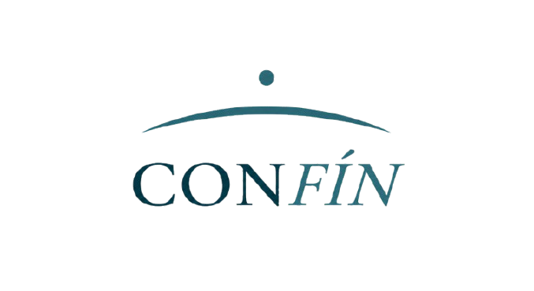
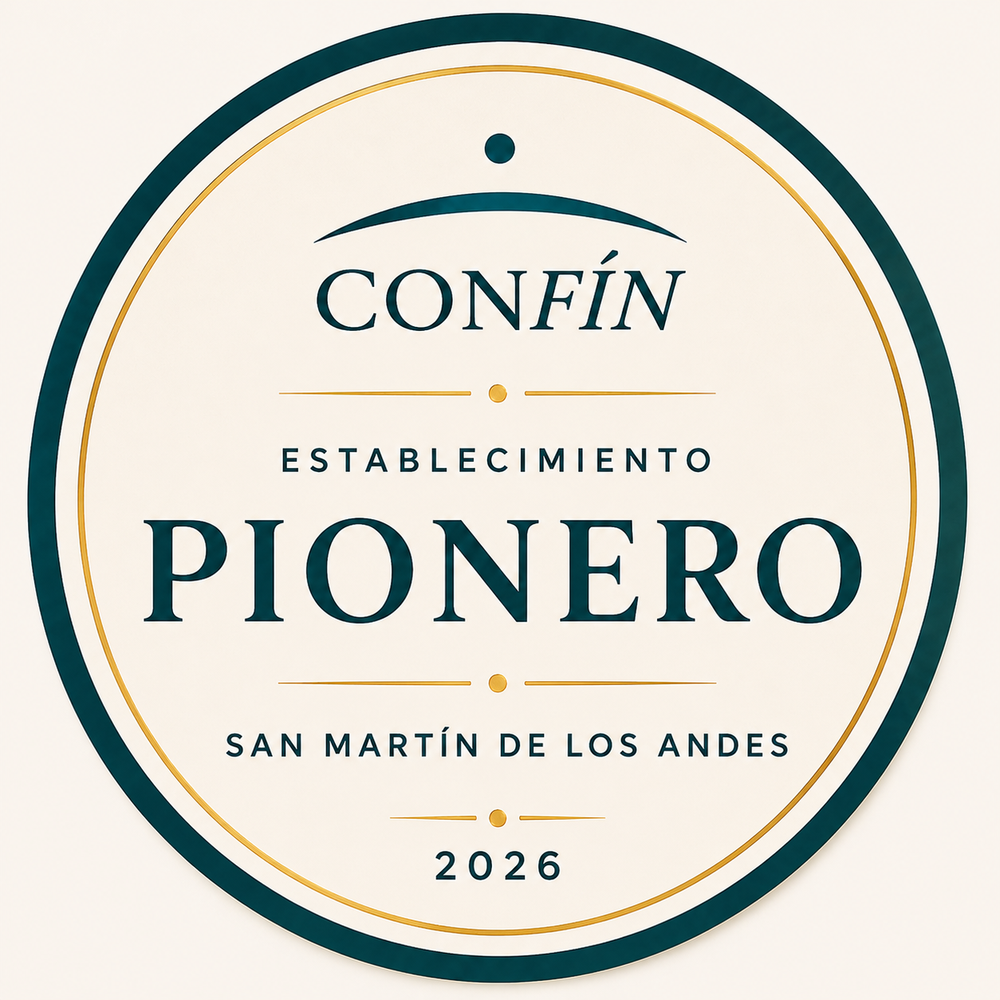

Tocá el ícono Compartir ↑ en la barra inferior de Safari
Elegí "Agregar a pantalla de inicio"
Tocá Agregar — CONFÍN queda en tu pantalla como una app
Tocá los tres puntos ⋮ en la esquina superior de Chrome
Elegí "Agregar a pantalla de inicio" o "Instalar app"
Confirmá — el ícono de CONFÍN aparece en tu pantalla
Una nueva forma de viajar.
Patagonia · Andes Australes
Una nueva forma de viajar.
Nacida en San Martín de los Andes
Publicar mi espacio → 📲 Recomendar CONFÍN a un amigo¿Qué estás buscando?
Inspiración para tu viaje
Tu guía inteligente para el sur
Guardá lugares y armá tu viaje
Las imágenes y establecimientos mostrados son ilustrativos hasta la incorporación oficial de cada espacio.

Cabaña de troncos a 200m del lago Lácar. Vista al volcán Lanín. Sin wifi — solo el sonido del viento entre los alerces y el reflejo del lago al amanecer.
CONFÍN conecta — el resto lo resuelven entre vos y el anfitrión directamente.
Increíble lugar, vistas al volcán desde la cama. El lago a metros. Volvería sin dudarlo.
Junio 2026Muy tranquilo y bien ubicado. La chimenea es perfecta para las noches frías.
Mayo 2026Mi viaje al sur
📍 Lugar guardado
Cabaña del Alerce — San Martín de los Andes
Preguntar disponibilidad para julio
💡 Idea de viaje
Hacer el recorrido de los Siete Lagos en auto
🗺️ Mapa de San Martín
📍 Tu ubicación
¿Tenés un espacio en el sur?
Conectá tu cabaña, restaurante, experiencia o comercio con viajeros que buscan lo auténtico de la Patagonia. Sin intermediarios. Sin comisiones. Solo visibilidad real.
Te respondemos en menos de 48 horas con toda la información.
Tu voz importa
Cada mensaje lo leemos. CONFÍN se construye con quienes lo usan.
> ⚠️ Ver nota de expansión internacional al final del documento.
CONFÍN es un servicio digital de curaduría y descubrimiento turístico operado por Liliana Edit Bruno, CUIT 27-18456502-7, con domicilio en San Martín de los Andes, Provincia de Neuquén, República Argentina.
El uso de esta aplicación implica la aceptación plena de los presentes Términos y Condiciones y de la Política de Privacidad. Al registrarse, el usuario confirma su aceptación explícita mediante checkbox, quedando registrada la fecha y versión aceptada. Si no estás de acuerdo con alguno de estos términos, por favor no utilices la Plataforma.
**CONFÍN ES:**
- Una plataforma digital de curaduría informativa y de descubrimiento turístico
- Un catálogo verificado de establecimientos turísticos, gastronómicos, comerciales y de servicios
- Un canal de conexión entre turistas y establecimientos locales
- Un servicio de orientación turística a través del asistente virtual Luna
**CONFÍN NO ES:**
- Una agencia de viajes ni un operador turístico bajo ninguna forma
- Una plataforma de reservas, cobros o intermediación en pagos entre turistas y establecimientos
- Un garante ni responsable solidario de los servicios prestados por los establecimientos listados
- Una plataforma de alquiler temporal de inmuebles
CONFÍN no percibe comisiones de los usuarios turistas por las contrataciones que realicen, siendo el servicio para estos de acceso gratuito. CONFÍN no intermedia, no garantiza la aptitud de los prestadores, ni interviene en la resolución de disputas comerciales.
El contrato de servicio (alojamiento, gastronomía, excursión, traslado u otro) se celebra única y exclusivamente entre el usuario turista y el establecimiento de forma directa. CONFÍN no forma parte de dicha relación comercial.
Todos los establecimientos, guías, transportistas, operadores turísticos, organizadores de actividades, comercios y prestadores incluidos en CONFÍN actúan de forma totalmente independiente.
CONFÍN no dirige, controla, supervisa ni participa en la prestación efectiva de los servicios ofrecidos por terceros.
Cada prestador es el único responsable por:
- La calidad de sus servicios
- La seguridad de sus actividades
- Las habilitaciones que resulten exigibles
- El cumplimiento de la normativa aplicable
- Los daños, perjuicios, incumplimientos o accidentes que pudieran producirse durante la prestación de sus servicios
El usuario reconoce que toda contratación se realiza directamente con el prestador elegido, sin intervención de CONFÍN.
Al registrarse, el usuario declara ser mayor de 18 años y tener capacidad legal plena para aceptar estos términos. El usuario es responsable de la veracidad de los datos que proporciona y del uso que realiza de la Plataforma.
Los establecimientos que se suscriben a CONFÍN son responsables de la exactitud, actualización y veracidad de toda la información que publican, incluyendo descripciones, precios orientativos, horarios, fotos y datos de contacto. CONFÍN se reserva el derecho de verificar, aprobar, rechazar, modificar, ocultar o dar de baja cualquier perfil cuando considere que este ya no cumple los estándares de calidad, actualización, hospitalidad o experiencia promovidos por la Plataforma, sin necesidad de expresar causa.
La información publicada en CONFÍN se proporciona de buena fe sobre la base de lo relevado al momento de la publicación. CONFÍN no verifica exhaustivamente precios ni disponibilidad en tiempo real. Los establecimientos pueden modificar sus tarifas, condiciones, horarios o disponibilidad sin previo aviso a CONFÍN.
Los precios publicados en CONFÍN tienen carácter exclusivamente orientativo y pueden variar sin previo aviso. El usuario deberá confirmar directamente con el establecimiento las tarifas vigentes antes de contratar cualquier servicio.
La información de cada establecimiento se basa en los datos provistos por el propio establecimiento. CONFÍN actúa de buena fe pero no garantiza su exactitud.
Al utilizar los botones de contacto (WhatsApp, llamada telefónica, sitio web u otro canal), el usuario abandona el entorno de CONFÍN. Una vez que el usuario establece contacto directo con un establecimiento mediante WhatsApp, teléfono, correo electrónico, sitio web u otro medio externo, toda relación posterior ocurre exclusivamente entre las partes. CONFÍN no tiene control ni responsabilidad sobre lo que ocurra fuera de su entorno.
Luna es un asistente virtual de inteligencia artificial que proporciona sugerencias e información turística con fines exclusivamente orientativos. Sus respuestas son generadas de forma automatizada mediante inteligencia artificial. El usuario reconoce que estas tecnologías pueden generar información inexacta o errónea, por lo que el usuario asume la total responsabilidad de verificar la información por canales oficiales antes de actuar en consecuencia.
Luna es una herramienta de orientación turística. No debe utilizarse para compartir datos sensibles ni para solicitar asesoramiento médico, legal, financiero o profesional. Las respuestas de Luna no son vinculantes y no constituyen garantía de disponibilidad, calidad ni precio de ningún servicio.
CONFÍN no se responsabiliza por decisiones tomadas en base a las sugerencias de Luna.
Los usuarios que dejen reseñas u opiniones declaran que estas son veraces y basadas en experiencias reales. Al publicar contenido en la Plataforma, el usuario otorga a CONFÍN una licencia no exclusiva, gratuita y transferible para usar, reproducir, distribuir, modificar, adaptar y mostrar dicho contenido en la Plataforma y con fines promocionales.
CONFÍN se reserva el derecho de moderar, editar o eliminar contenido sin previo aviso cuando considere que afecta injustificadamente la reputación de terceros, no puede ser verificado razonablemente, o resulta ofensivo, discriminatorio o contrario a estos términos.
La Plataforma almacena datos de preferencias del usuario (favoritos, agenda, notas personales) de forma local en el dispositivo del propio usuario mediante tecnología localStorage. Dado que estos datos se guardan localmente en el dispositivo, CONFÍN no posee copias de respaldo en sus servidores. La pérdida, borrado de caché del navegador o rotura del dispositivo por parte del usuario implicará la pérdida de dichos datos, no siendo CONFÍN responsable por dicha pérdida.
CONFÍN actúa exclusivamente como plataforma informativa y de descubrimiento turístico. En ningún caso será responsable por:
- Accidentes personales, daños materiales o lesiones
- Pérdidas económicas directas, indirectas o lucro cesante
- Cancelaciones o incumplimientos contractuales de establecimientos
- Falta de habilitaciones de los prestadores
- Conductas de terceros
- Calidad o seguridad de los servicios ofrecidos por establecimientos o prestadores
- Fallas técnicas, interrupciones del servicio o pérdida de datos
- Decisiones tomadas en base a información desactualizada o sugerencias de Luna
Todo el contenido de CONFÍN — código, diseño, interfaz, textos curatoriales, logotipos, nombre comercial y metodología — es propiedad exclusiva de Liliana Edit Bruno o de sus licenciantes. Queda prohibida su reproducción total o parcial sin autorización expresa. Las marcas y logotipos de los establecimientos adheridos pertenecen a sus respectivos propietarios y se utilizan únicamente con fines informativos dentro del catálogo.
Los establecimientos suscritos abonan una tarifa mensual según el nivel contratado y la moneda acordada al momento del alta. Los precios, condiciones de prueba, descuentos y formas de pago se detallan en el plan contratado. CONFÍN se reserva el derecho de modificar las tarifas con un preaviso de 30 días. No se realizan reembolsos por períodos ya facturados salvo causa imputable a CONFÍN.
Queda prohibido utilizar CONFÍN para publicar información falsa o engañosa, realizar actividades ilegales, intentar acceder sin autorización a sistemas o datos de la Plataforma, o usar la Plataforma con fines distintos al turismo y descubrimiento local.
CONFÍN puede suspender o dar de baja una cuenta de usuario o establecimiento ante violación de estos términos, sin necesidad de preaviso y sin responsabilidad por ello.
CONFÍN puede modificar estos términos con un preaviso de 15 días mediante notificación en la Plataforma. El uso continuado implica aceptación de los nuevos términos. Se mantendrá un historial de versiones disponible para consulta.
CONFÍN no será responsable por incumplimientos derivados de causas ajenas a su control razonable. Si alguna cláusula de estos términos fuera declarada inválida o inaplicable, las demás cláusulas continuarán vigentes en su totalidad.
Los presentes términos se rigen por las leyes de la República Argentina. Ante cualquier controversia, las partes se someten a la jurisdicción de los Tribunales Ordinarios de San Martín de los Andes, Provincia de Neuquén, renunciando a cualquier otro fuero que pudiera corresponder.
Para consultas, reclamos o ejercicio de derechos: contacto.confinapp@gmail.com
⚠️ NOTA INTERNA — EXPANSIÓN INTERNACIONAL
Cuando CONFÍN se expanda fuera de Argentina, las referencias a moneda, jurisdicción y legislación deberán adaptarse a cada mercado. Revisar obligatoriamente antes de cualquier expansión.
Liliana Edit Bruno, CUIT 27-18456502-7
San Martín de los Andes, Provincia de Neuquén, República Argentina
contacto.confinapp@gmail.com
- Nombre y dirección de correo electrónico al registrarse
- Contenido de reseñas y opiniones publicadas
- Mensajes enviados al asistente virtual Luna
La app puede utilizarse de forma parcial sin registro. Los datos indicados aplican únicamente a usuarios que opten por registrarse.
Los siguientes datos se guardan **exclusivamente en el dispositivo del usuario** mediante tecnología localStorage y no se transfieren a servidores externos:
- Favoritos guardados
- Notas personales de la agenda
- Preferencias de idioma y accesibilidad
- Historial de navegación dentro de la app
El usuario es el único responsable de la conservación de estos datos. CONFÍN no posee copias de respaldo.
Datos de uso anónimos (tipo de dispositivo, idioma, secciones visitadas) para mejorar la experiencia, sin identificación personal. Procesados mediante Supabase Analytics.
Los datos recopilados se utilizan para brindar el servicio de descubrimiento turístico, personalizar la experiencia, gestionar el registro, moderar contenido y mejorar la Plataforma.
Las consultas realizadas al asistente virtual Luna son procesadas mediante servicios de inteligencia artificial provistos por terceros, actualmente Anthropic (Claude).
CONFÍN podrá almacenar temporalmente información técnica necesaria para la prestación, seguridad y mejora del servicio. Las conversaciones no se utilizan para identificar personalmente al usuario ni se conservan por más tiempo del razonablemente necesario para el funcionamiento de la Plataforma. CONFÍN podrá conservar logs anonimizados de interacciones para mejorar el servicio.
El tratamiento de los datos enviados a Luna también puede estar sujeto a las políticas de privacidad y retención de datos del proveedor tecnológico utilizado para generar las respuestas (Anthropic: anthropic.com/privacy).
**Se recomienda a los usuarios no compartir información sensible, confidencial, financiera, médica o legal durante sus interacciones con Luna.**
Luna utiliza inteligencia artificial para generar respuestas orientativas. Este sistema no crea perfiles personales que afecten derechos del usuario ni genera decisiones vinculantes. Sus sugerencias tienen carácter exclusivamente informativo.
CONFÍN utiliza los siguientes servicios de terceros, con quienes se procura mantener acuerdos de procesamiento de datos (DPA) donde corresponda:
- **Supabase** — base de datos (región São Paulo, Brasil): almacena datos de registro
- **Anthropic** — procesamiento de conversaciones con Luna
- **Plataforma de pagos** (a confirmar): procesamiento de suscripciones de establecimientos
Los datos de registro se almacenan en servidores de Supabase en Brasil (sa-east-1) con garantías adecuadas de seguridad.
Los datos se conservan mientras la cuenta esté activa y por el tiempo necesario para cumplir obligaciones legales. El usuario puede solicitar la eliminación en cualquier momento.
De conformidad con la Ley 25.326 de Protección de Datos Personales, el usuario tiene derecho a:
- **Acceso**: conocer qué datos tenemos
- **Rectificación**: corregir datos inexactos
- **Cancelación**: solicitar la eliminación
- **Oposición**: oponerse al tratamiento
- **Portabilidad**: recibir sus datos en formato portable
- **Oposición a decisiones automatizadas**: en los casos que corresponda
Para ejercer estos derechos: contacto.confinapp@gmail.com
CONFÍN implementa medidas técnicas y organizativas razonables para proteger los datos personales contra acceso no autorizado, pérdida o alteración.
La Plataforma no está dirigida a menores de 18 años. No recopilamos datos de menores de forma consciente.
La Plataforma utiliza localStorage del navegador para guardar preferencias del usuario de forma local. No utilizamos cookies de rastreo de terceros.
Al utilizar botones de contacto externos (WhatsApp, sitios web de establecimientos), el usuario interactúa con plataformas sujetas a sus propias políticas de privacidad. CONFÍN no es responsable del tratamiento de datos realizado por dichas plataformas.
Esta política puede actualizarse. Los cambios significativos serán notificados con al menos 15 días de anticipación. Se mantendrá historial de versiones.
Para consultas: contacto.confinapp@gmail.com
Para reclamos formales: Agencia de Acceso a la Información Pública — www.argentina.gob.ar/aaip